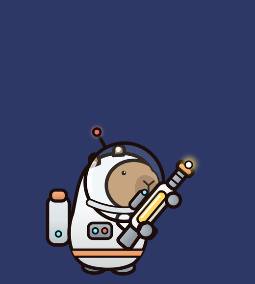
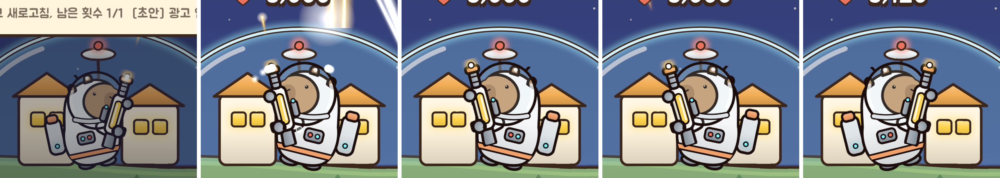
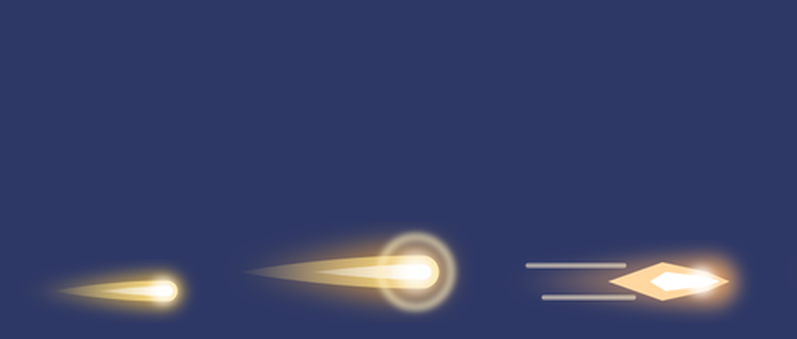
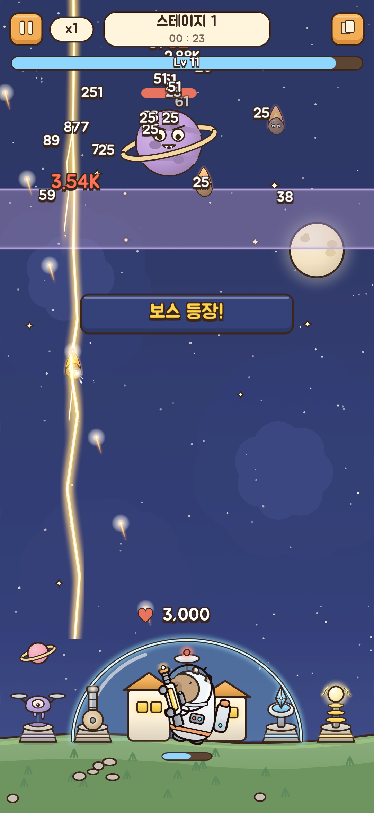
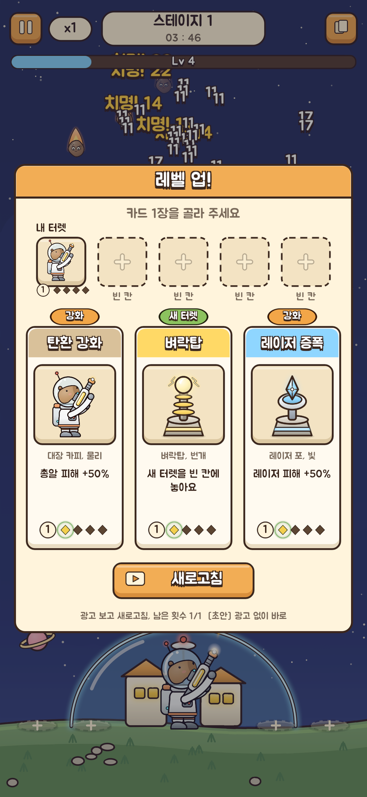
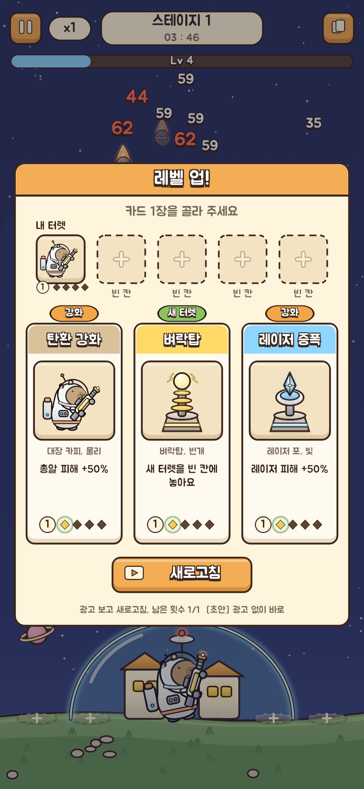

1차 수정안 — 의견 7개 반영 (2차)
2026-11-16 오후 · 1차_수정안_결과.html 의견 7개 반영 · 자동 시험 오류 0 (새 검사 줄 5개: 총이 적 쪽으로 돎 · 서서 쏠 때 몸이 안 튐 · 적이 UI 아래에서 나옴 · 숫자 합치기 · 작은 레이저 출발점) · 왼쪽 = 전(오전 판), 오른쪽 = 뒤
먼저 알려 드릴 것 (제 해석)
- 대장 카피 = 카치건 카피바라 몸 그대로(통통한 옆모습 · Y자 코 · 점 눈)에 하얀 우주복 · 유리 헬멧 · 산소통 · 안테나를 입혔습니다. 귀는 헬멧 안에서 위로 보이게 했습니다(예전 규칙 "모자를 써도 귀는 위로").
- 총은 카치건처럼 따로 그려 뒤 손을 축으로 적 쪽으로 돕니다. 그래서 팔이 짧아도 위로 겨눌 수 있습니다. 적이 왼쪽이면 몸을 돌립니다.
- 높이 겨눌수록 몸을 뒤로 젖히고(최대 14°), 총은 몸에 대해 62°까지만 듭니다 — 수직으로 들면 총이 주둥이를 가려서입니다. 바로 머리 위의 적은 총구에서 조금 비스듬히 쏩니다.
- 치명 숫자: 카치건과 똑같이 "치명!" 글자는 빼고 크고 붉은 주황으로만 구분합니다.
- 적 나오는 높이: 요즘 폰(19.5:9 이상)은 그대로, 그보다 짧은 화면만 UI 아래로 내려와 기지까지 거리가 짧아집니다(16:9 에서 약 25%).
Config의Hud_H(210) ·Spawn_Below_Hud(0.6)로 바꿀 수 있습니다. - 이동 무게감은
Config의Guardian_Smooth(0.22초) 한 줄 — 클수록 묵직합니다.
① 대장 카피 — "팔이 짧아도 되니 귀엽게 · 카치건과 비슷한 형태로"


실제 전투 화면 5장면 확대 — 적 위치마다 몸 방향 · 총 각도 · 뒤로 젖힘이 바뀝니다

② 탄환 — "볼륨이 너무 두꺼움 · 조금 더 샤프하게"
대장 탄 · 충전탄 · 관통포 탄 (같은 배율). 두께 약 60%, 머리 빛 · 둘레 번짐 작게

③ 전투 화면




